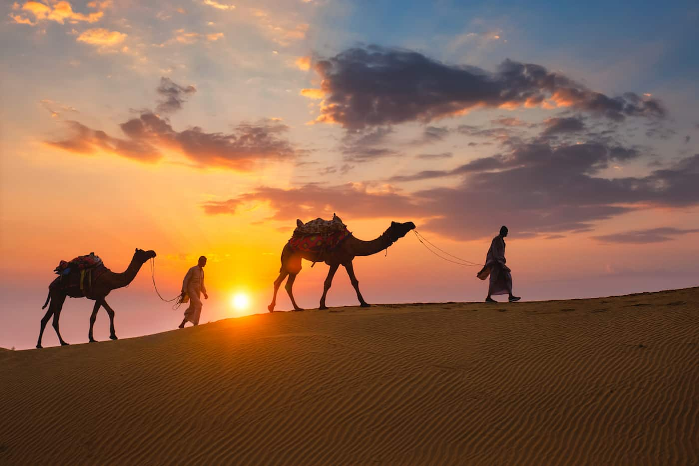

Rajasthan
"The Land of Kings"
Quick Facts
Popular Tourist Attractions

Amber Fort
A majestic fort located in Jaipur showcasing Rajput architecture.
Jaisalmer Fort
Known as the 'Golden Fort', a UNESCO World Heritage Site.
City Palace
Overlooking Lake Pichola, it reflects the grandeur of Mewar rulers.
Nature & Wildlife
Home to Ranthambore National Park, Sariska Tiger Reserve, and Desert National Park — Rajasthan supports rich biodiversity in arid conditions.
Famous Personalities
- Maharana Pratap: Revered Rajput warrior of Mewar.
- Mirabai: Saint-poetess known for devotion to Lord Krishna.
- Irrfan Khan: Internationally acclaimed actor.
Local Handicrafts
Rajasthan is famous for Bandhani textiles, blue pottery, marble carvings, and handcrafted jewelry.
Climate
Arid and dry desert climate with scorching summers, mild winters, and sparse rainfall.
Culture & Festivals
Dance
Famous folk dances include Ghoomar and Kalbeliya.
Festivals
Desert Festival, Teej, and Gangaur are celebrated with grandeur.

Food
Signature dishes include Dal Baati Churma, Laal Maas, and Ghewar.
Attire
Colorful turbans, ghagras, and odhnis with mirror work and embroidery.
Did You Know? Rajasthan is the largest Indian state by area and home to the Great Indian Thar Desert.
Note: Information may be subject to updates. Kindly notify us of any discrepancies.